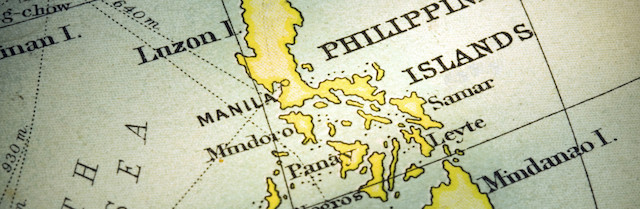
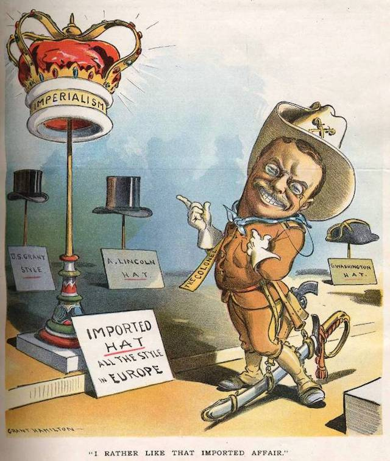
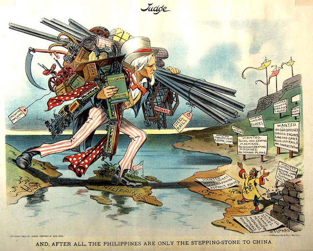
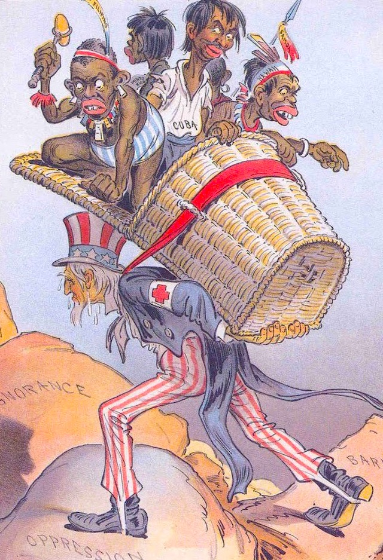
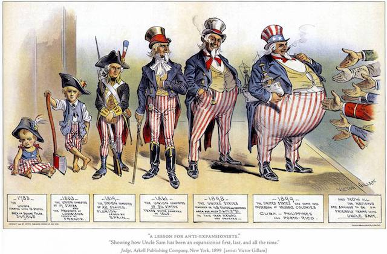
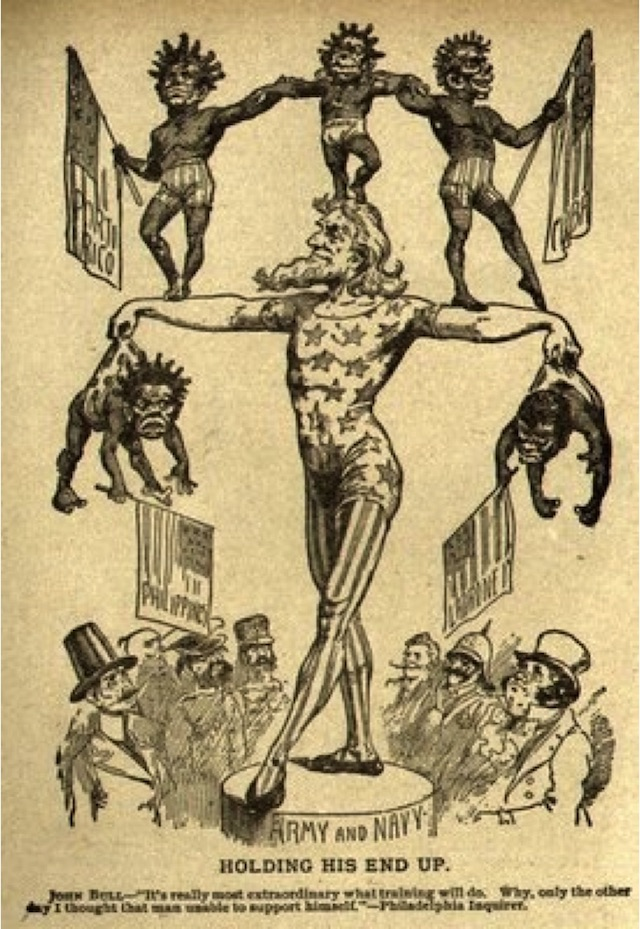
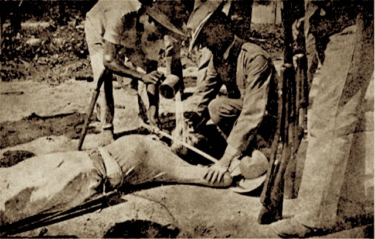

2017-07-09 08:00

Review of “The True Flag” by Stephen Kinzer (ISBN 9781627792165)
Stephen Kinzer’s The True Flag is an account of the moment the United States embraced Empire and never again looked back. The U.S. had already taken Native American and Mexican land by force and tasted victory in Cuba. Now it was contemplating making the Philippines, Cuba, Puerto Rico, Guam – and Hawaii – permanent colonies. Powerful business and political interests, including Theodore Roosevelt, who had made a name for himself on San Juan Hill in Cuba, were unapologetic advocates of empire.
For the Imperialists there was little difference between taking Texas or the Philippines. From the moment the U.S. became a nation, Thomas Jefferson described America as a new empire and set forth the goal of taking Spanish territory when “our population can be sufficiently advanced to gain it from them piece by piece.”

But in 1898 there was a powerful, national “Anti-Imperialist League” – founded in Massachusetts, with at least a hundred chapters. It was led by former Senator and Interior Secretary Carl Schurz, magnate Andrew Carnegie, labor chief Samuel Gompers, civil rights advocate Booker T. Washington, Democratic Party leader William Jennings Bryant, co-founder of the Republican Party George Bouthwell, former presidents Grover Cleveland and Benjamin Harrison – all opposed the Treaty of Paris advanced by President William McKinley that would foist “Christian” rule over the “niggers” and savages of the Philippines.
For over a month the issue was debated in the Senate and the true soul of American Imperialism was bared and permanently read into the Congressional Record. Kinzer makes use of the Record, as well as contemporary newspaper accounts in his excellent book.
Behind the scenes were the Imperialists – Henry Cabot Lodge, Theodore Roosevelt, William Randolph Hearst, and Senators from mainly what we would now call the red states. American industry wanted to expand beyond its limited trade with Europe, the states of the North had tasted victory in the Civil War, and suddenly there were new enemies and new markets to conquer. Finally, the crumbs of Spain’s disintegrating empire were simply too tempting to resist, and the Philippines were seen as a stepping-stone to China. Nationalistic, “jingoistic” fervor gripped the nation, and it was not merely industry and commerce itching for war – it was also the average American who was aching for conquest.

While debate over America’s soul was raging in the Senate – and this is how serious the moral risks of Imperialism were seen at the time – the Philippines had already been occupied. In what even at that time had become standard operating procedure, President McKinley instructed General Arthur MacArthur (father of General Douglas MacArthur) to provoke a military response from the Philippine military. The resulting massacre claimed 3,000 Filipino and 60 American lives and galvanized public opinion in favor of possession of the islands.
On the same day that the battle in Manila occurred, three American newspapers published a new poem by Rudyard Kipling called “The White Man’s Burden: the United States and the Philippine Islands.” Kipling’s work was everything Americans wanted to hear, and had been specifically written for the occasion:
Take up the White Man’s burden—
Send forth the best ye breed—
Go send your sons to exile
To serve your captives’ need
To wait in heavy harness
On fluttered folk and wild—
Your new-caught, sullen peoples,
Half devil and half child
Take up the White Man’s burden
In patience to abide
To veil the threat of terror
And check the show of pride;
This was an anthem for Christian warriors. This was a rationale for conquest. Moreover, it was a glorification of a better race performing its Christian duty to serve their captives’ needs, these “new-caught, sullen peoples, half devil and half child,” and – curiously – to “veil the threat of terror.”
Since the beginnings of Imperial America, the threat of terror from non-Christians and non-white has always been a rationale for occupation.

The final nail in the coffin of American anti-Imperialism was the betrayal by William Jennings Bryan, head of the Democratic Party, who decided to play along with the Republican Imperialists, supporting the Treaty of Paris, and then begging for Philippine independence. That was his shockingly naive strategy. Bryan, who saw himself as a “pragmatic progressive,” managed to shake the resolve of at least a dozen Democrats, who ended up voting with the Republicans.
Senator Eugene Hale of Maine, a fundamentalist who cheered the U.S. acquisition of Hawaii because of his state’s many missionaries, was nevertheless shocked by the bloody Filipino insurgency and the brutal manner in which is was suppressed: “More Filipinos have been killed by the guns of our army and navy than were patriots killed in any six battles of the Revolutionary War. […] The slaughter of people in no way equal to us […] has stupefied the American mind. No one has said that our mission of commerce and of the gospel was to be preceded by the slaughter of thousands of persons.”
But senators like Hale had been deceiving themselves all along. McKinley and his generals certainly anticipated the slaughter. They planned it.

The Imperialists ran their victory lap and boasted that the United States was now the most fearsome military in the world. Indiana Senator Albert Beveridge felt no need to address the East Coast elites or their swishy European friends. After the U.S. victory over the Filipinos, Beveridge did what today’s chickenhawk Congressmen do – traveled to the Philippines on a “fact-finding mission” and met with the American occupation commander, General Elwell Otis, who was fighting an insurgency with 30,000 troops. Like today’s Senators who strap on the kevlar and pose for patriotic constituents, Beveridge did all that and thanked the troops for their service. American troops, he said, were “Saxon types” with “racial virtue in their veins.” They were “manifest destiny personified.”

“We are the most militant nation on earth,” Beveridge crowed. “We have more of the world, we know more of the world, we are better prepared to bless the world and thus to bless ourselves. The great people of the American Republic, from whom flow all our large and elemental movements, feel that the day of our empire, as a soverign force of earth, is in its first grey dawn.”
And Beveridge had nailed it. This, the theme of Kinzer’s book, was indeed the grey dawn in which the American empire was born. Or at least its paternity acknowledged.
The story ends, as we know, with the United States committing war crimes in the Philippines, including mass slaughter of civilians and the use of an early form of waterboarding, carving out what is now an American gulag in Guantanamo, Cuba, and making the other seized territories permanent gifts to pineapple barons and American sweatshops. Eventually Hawaii became a state. Puerto Rico was plundered by Congress, victimized by investment schemes created for industry that financially bankrupted the island for generations to come.

Now, over a century later, the only thing that’s changed is that a modern-day “Anti-Imperialist League” is all but unimaginable in a nation at permanent war for generations. And Democrats and Republicans are still unanimous in continuing to take up the “White Man’s Burden” – invading any land they fancy and preempting any threat of terror from sullen brown devils with their childish, savage ways.
* * *
Earlier this year Terry Gross did an interview with Stephen Kinzer on Fresh Air.